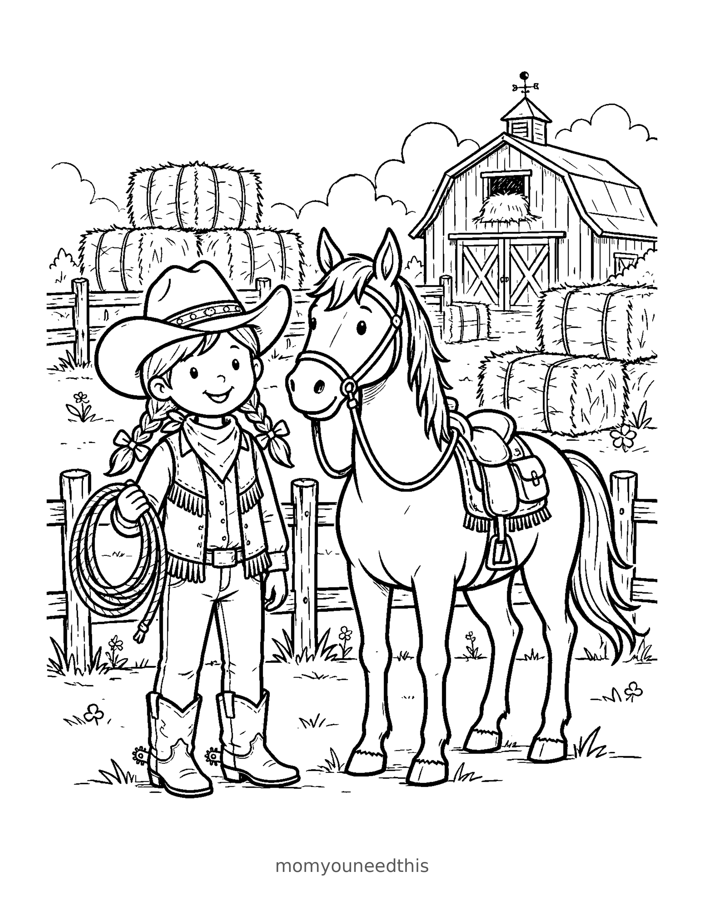
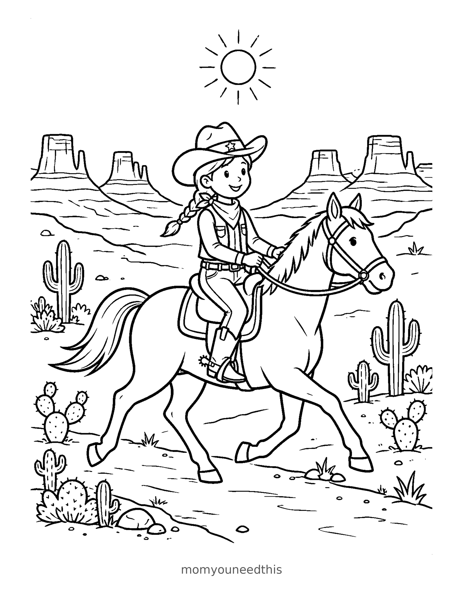
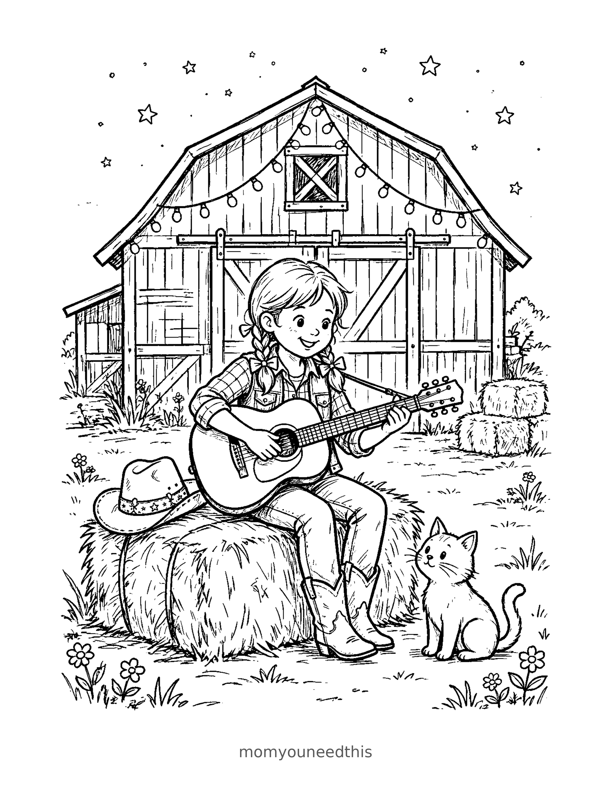

Free Cowgirl Coloring Pages Ranch, Trail Ride & Barn Guitar Printables
These free cowgirl coloring pages give your child one full day on the ranch to color — a cowgirl meeting her horse at the fence in the morning, riding the desert trail at noon, and playing guitar by the barn as the day winds down. Download the set below, print at home on letter-size paper, and let the coloring fun begin. No signup needed.
Last updated: November 5, 2026
Quick Answer
Yes — this page has three free printable cowgirl coloring pages: a cowgirl and her horse at the ranch, a ride along a desert trail with cacti and mesas, and a quiet guitar song by the barn. Bold outlines and big spaces, made for little hands. Download, print on letter-size paper, and hand over the crayons — no signup, no cost.
At a Glance
- Ages: 3–8
- Pages: 3 free printables
- Format: Print at home, letter size
- Cost: Free, no signup
- Supplies: Crayons or markers
- Time: 10–20 minutes
🐴 Cowgirl and Her Horse Coloring Page

🎨 Download Your Free Cowgirl & Horse Coloring Page
A cowgirl and her best friend — hat on, bandana tied, standing proud beside her horse at the ranch fence, ready for the day's ride.
⬇️ Download Free Ranch Page 🖨️ Print Ranch Page🎁 Free printable for preschoolers & kids
🌵 Cowgirl on the Desert Trail Coloring Page

🎨 Download Your Free Desert Trail Coloring Page
Out on the trail — a cowgirl riding through the desert, cacti standing tall, mesas on the horizon and a big sun overhead.
⬇️ Download Free Trail Page 🖨️ Print Trail Page🎁 Free printable for preschoolers & kids
🎸 Cowgirl with a Guitar Coloring Page

🎨 Download Your Free Barn Guitar Coloring Page
Every cowgirl deserves a song at the end of the day — boots up, guitar out, and the barn glowing behind her.
⬇️ Download Free Guitar Page 🖨️ Print Guitar Page🎁 Free printable for preschoolers & kids
More Coloring Pages
Tap any picture to open its theme page and download the free printable.


🤠 How To Use This Page
- Browse the three scenes and pick the cowgirl moment your child will love most — at the ranch, on the trail, or by the barn.
- Tap download or print under that design — the file opens full-size, ready for letter-size paper.
- Print a couple of copies so your child can color the cowgirl's hat classic brown one day and bright pink the next.
- Color together with crayons or markers, then hang the finished page where the whole ranch can see it.
🤠 Why Kids Love Cowgirl Coloring Pages
Some kids dream in pink tutus, and some dream in boots and bandanas. These cowgirl coloring pages are for the second kind — a girl and her horse, out where the sky is big and the day is hers to plan. Each scene hands your child a stack of delicious decisions: the color of the horse, the pattern on the bandana, the shade of the desert sky at high noon.
The three scenes also tell one long day. Morning at the ranch, meeting the horse. Midday on the desert trail, riding past the cacti. Evening by the barn, guitar out as the light goes down. Kids practice grip, pressure and color planning while they work — and a finished cowgirl on the fridge is a little daily reminder that girls can ride anywhere.
🐴 Meet the Three Cowgirl Scenes on This Page
At the ranch. The cowgirl stands beside her horse at the ranch fence, hat on and bandana tied, the barn behind them. The horse is the biggest, boldest shape in the whole set — a generous canvas for little hands, and the first page most toddlers should meet.
On the desert trail. Saddle up: the cowgirl rides her horse along a desert trail, cacti standing like green exclamation marks and flat-topped mesas lining the horizon under a big round sun. It is the most layered scene in the set, and the one older kids plan most carefully — desert colors are a whole art lesson on their own.
By the barn. The day winds down with the cowgirl sitting by the barn, guitar in her lap. It is the calmest scene on the page — a good pick for a quiet afternoon, and a natural place to talk about what song she might be singing.
✏️ Cowgirl Coloring Tips
- Start with the horse. Brown, black, white or dappled gray are the classics — then match the cowgirl's hat or bandana to the saddle for a put-together rider.
- Make the desert glow. Warm oranges, pinks and yellows in the sky, with green cacti standing out against them, turn the trail scene into high noon.
- Pattern the bandana. Spots, stripes or little stars on the bandana and shirt give older kids a satisfying detail project.
- Count the cacti. On the trail page, count the cacti and fence posts as your child colors them — a quiet counting game hidden inside the picture.
- Draw the audience. On the guitar page, older kids can add birds on the fence or a dog at the cowgirl's feet in the wide margins.
🤠 Coloring Pages for Different Ages
For ages 3 to 4, start at the ranch. The horse is one big central figure, and the hat, fence and sky are all wide, bold shapes that little hands can fill without worrying about small details. Scribbling is fine at this age — they are learning how crayons move and how hard to press.
For ages 5 to 6, the guitar by the barn is the sweet spot. The cowgirl is still big and friendly, but now there are boots, a hat brim and barn boards to plan colors for.
For ages 7 to 8, hand over the desert trail. It carries the most layers — horse, rider, cacti, mesas and sky — and rewards patience and careful coloring. Older kids often spend the longest on this one, working out their desert palette.
🐴 More Ranch Fun After Coloring
After coloring, ask your child where the cowgirl is riding to tomorrow. Write their answer on the back of the page (or let them dictate while you write) and the sheet becomes a keepsake instead of a throwaway. If the horse stole the show, our step-by-step horse drawing tutorial teaches kids to draw a horse of their own, one simple shape at a time.
And for more animals to meet at the fence, the farm coloring pages fill the barnyard with cows, pigs, chickens and tractors — the cowgirl's whole neighborhood, ready to print.
🔗 More Free Printables You’ll Love
- Free Farm Coloring Pages Cows, pigs, chickens and tractors — the whole barnyard the cowgirl rides past.
- How to Draw a Horse — Step by Step When coloring the horse sparks bigger plans: a free tutorial that builds a horse one shape at a time.
- Free Princess Coloring Pages For kids who split their dreams between castles and ranches — gowns, crowns and royal scenes.
- All Free Coloring Pages Browse every free coloring page on the site, organized by theme.
❓ Cowgirl Coloring Pages FAQ
Are these cowgirl coloring pages really free?
Yes — all three designs on this page are free original printables from MomYouNeedThis. Download them, print them at home, and color — no signup and no cost.
What ages are these coloring pages best for?
Kids ages 3 to 8 get the most from this set. Younger children can start on the ranch scene, with its big horse and wide-open spaces, while older kids enjoy the layered desert trail and the detail around the barn.
How do I print a coloring page?
Tap the download button under the design you want, then print the file on regular letter-size paper. The print button opens the full-size page in a new tab if you prefer to print from there.
Which of these cowgirl coloring pages is easiest for toddlers?
The ranch design. The horse is one big, bold shape, the cowgirl's hat and boots are wide and simple, and the fence and sky are open spaces to fill — a perfect first cowgirl page for little hands.
Can I make a coloring book from these pages?
Yes — print all three designs, stack them in order, and staple along the left edge. Add a cover sheet with your child's name on it for a finished homemade cowgirl coloring book.
What colors should a cowgirl wear?
Any colors she likes — that is the fun of it. Classic picks are a red bandana, a brown or pink hat, denim-blue jeans and brown boots, but a purple-hat, rainbow-boot cowgirl looks just as ready for the trail.